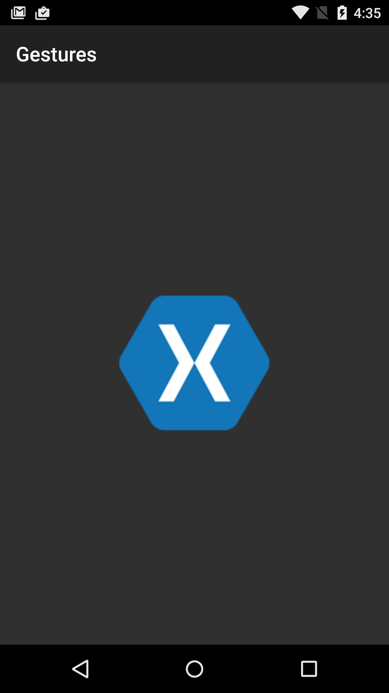
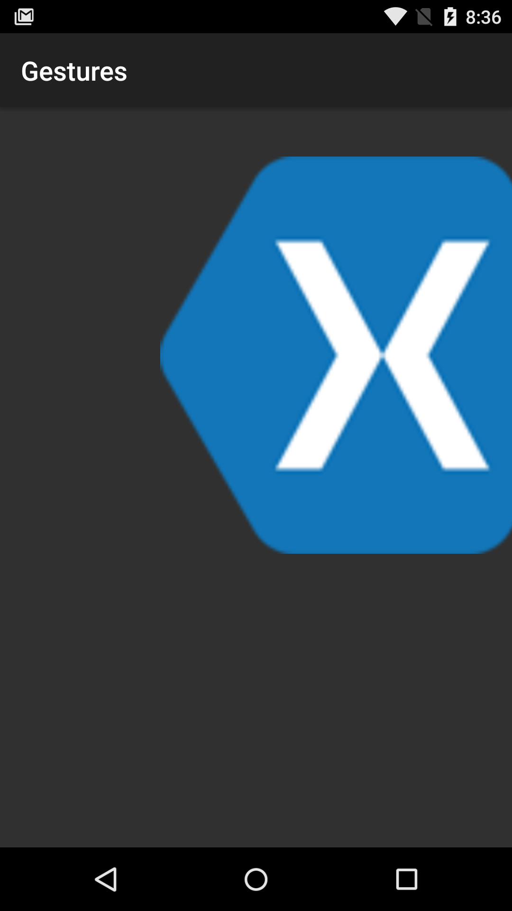

Duration
10 minutes
Goals
The primary goal of this lab is to add the OnScale gesture recognizer to the application from exercise 1,
allowing us to both move and resize an image using built-in gestures.
|  |  |
Required assets
This exercise is a continuation of the previous exercise. You can use your existing solution or start with the completed solution in the Exercise 1 folder. The Exercise 2 folder contains a completed a solution which you can use to check your work. Please make sure you have these folders before you begin.
Challenge
Use the following steps to complete the challenge exercise, referring to the AND241 - Gestures slides for guidance. If you need more information, detailed instructions are provided below.
- Open your completed project from Exercise 1, you'll be working in MainActivity.cs.
- Add 2 class level variables, a
ScaleGestureDetectorcalled a scaleDetector and afloatnamed scale, initialized to 1.0f. - Implement
IOnScaleGestureListener. - Pass the
MotionEventto the scale gesture detector inOnTouchEvent. - Respond to the scale gesture detector in the
OnScalemethod.
Steps
You can either use the above steps and work through the exercise, or follow the step-by-step instructions shown here.
Open the solution from Exercise 1
Like the previous exercise, we'll be working in MainActivity.cs.
Add a scale gesture detector
- Add a class level
ScaleGestureDetectorvariable named scaleDetector. - Instantiate scaleDetector in the
OnCreatemethod, use the current instance of MainActivity for the context and the listener (this). - We'll also add a class level
floatto track the current scale (size). Name it scale and initialize it to 1.0f;
Implement IOnScaleGestureListener
We'll implement a second interface on MainActivity for the scale gesture detector.
IOnScaleGestureListener and IOnGesturesListener can be implemented on the same class.
- Implement
IOnScaleGestureListener - Add the methods required by
IOnScaleGestureListenerpublic bool OnScale (ScaleGestureDetector detector)public bool OnScaleBegin (ScaleGestureDetector detector)public void OnScaleEnd (ScaleGestureDetector detector)
- If you used any tooling to implement the interface, remove the
NotImplementedexceptions. - Return
truefor any required methods.
Pass the MotionEvent to the scale gesture detector
- In the
OnTouchEventmethod, pass theMotionEventparameter e to scaleDetector using itsOnTouchEventmethod.
Respond to the scale gesture detector
- In the
OnScalemethod, we'll update our class level variable scale. Multiply scale by the scale gesture detector'sScaleFactorproperty. - Use the updated scale variable to set the image xamLogo's
ScaleXandScaleYproperties. - Run the app!
Summary
In this exercise you have expanded on the previous exercise to add an additional built-in gesture using the IOnScaleGestureListener and ScaleGestureDetector to create a multi-gesture app, which scales and scrolls.